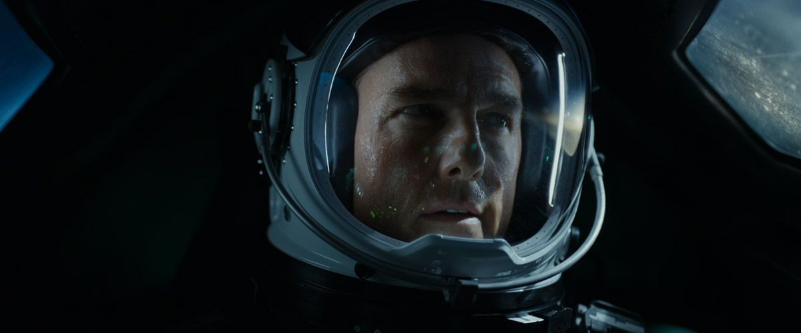

In a breathtaking leap into the cosmos, Space Entertainment Enterprise (S.E.E) has unfurled its celestial vision, unveiling an otherworldly marvel known as SEE-1. Picture this: a wondrous realm among the stars, a veritable symphony of spectacle and creativity poised to ignite the universe with its radiant offerings.
SEE-1, a masterwork of cosmic ingenuity, is set to take center stage, a celestial coliseum where the stars themselves are the audience. Nestled within the embrace of micro-gravity, this ethereal module is destined to become a stage for the grandest performances and the birthplace of timeless tales.
Behold, as films are crafted amidst the dancing constellations, music reverberates through the galaxies, and sports events become cosmic clashes of prowess. Imagine artists, creators, and visionaries converging from every corner of Earth, drawn like cosmic moths to the luminous allure of SEE-1's orbiting stage.
The whispers of innovation echo through its corridors, as it becomes an interstellar studio for recording the melodies of the cosmos. In this spaceborne sanctuary, content bursts forth like supernovae, captured and transmitted across the cosmic waves. With a flourish of ingenuity, SEE-1 transforms into a beacon of entertainment, a mesmerizing fusion of art and science.
Yet, the grandeur of SEE-1's creation is no mere fantasy; Axiom Space, the architects of tomorrow's wonders, have pledged to weave this cosmic tapestry.
Like cosmic artisans, they construct the very fabric of dreams, stitching together the future and the stars themselves. With a cosmic dance of docking, SEE-1 embraces Axiom's cradle, Axiom Station, a veritable garden of innovation and cosmic exploration.
As the future unfolds, the cosmic ballet continues, and in 2028, Axiom Station will gracefully waltz away from the International Space Station, like a phoenix soaring into the cosmic unknown, shedding the constraints of Earthly ties.
Dmitry and Elena Lesnevsky, the cosmic dreamweavers behind S.E.E., articulate their boundless excitement, their words like shooting stars across the cosmos: "SEE-1 is our odyssey, humanity's triumph, and a threshold to a new era. It beckons the bold to unravel the enigma of space's embrace, a theater of stars awaiting their constellations."
In the halls of Axiom, Michael Suffredini, a cosmic bard of progress, muses, "Axiom Station, our cosmic cornerstone, expands its embrace to cradle SEE-1, an epic saga of entertainment and exploration."
And there, amidst the celestial ballet, Dr. Michael Baine, the virtuoso of ingenuity, paints a canvas of limitless possibilities, "SEE-1 is not merely a stage; it is a canvas for creativity, a symphony of senses, a tapestry woven from weightlessness itself."
In this cosmic crescendo, Richard Johnston, the cosmic orchestrator of S.E.E., spins a tale of inspiration that echoes through galaxies: "From the quills of Jules Verne to the tapestries of 'Star Trek,' fiction has birthed dreams. SEE-1 crystallizes those dreams into constellations, a cosmic narrative crafted amongst the stars."
And so, fellow dreamers, prepare to cast your gaze upon SEE-1, where the celestial curtains rise, and the universe itself becomes the ultimate stage for a symphony of entertainment, where reality and fantasy converge among the twinkling stars.
@2023 SpaceQuest
Terms and conditions
Privacy